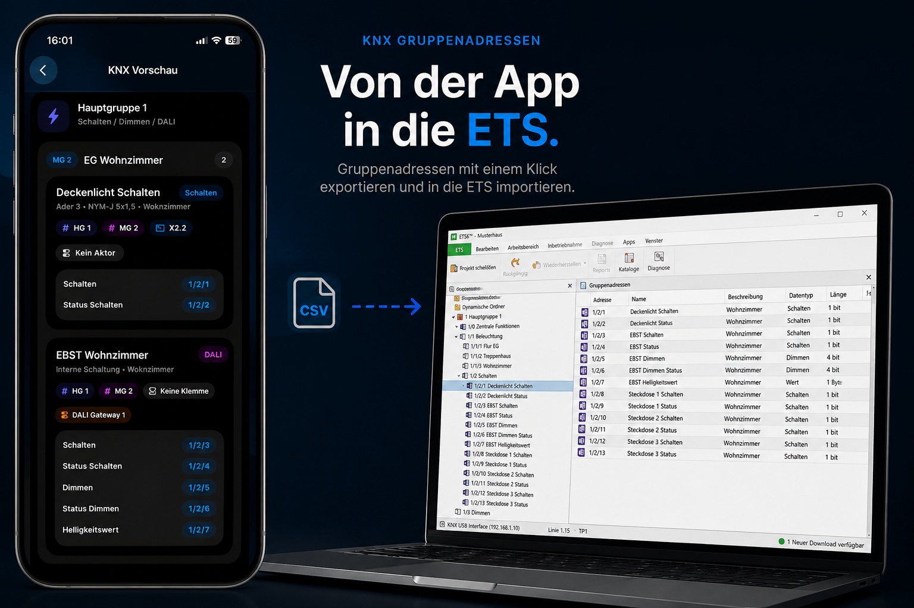
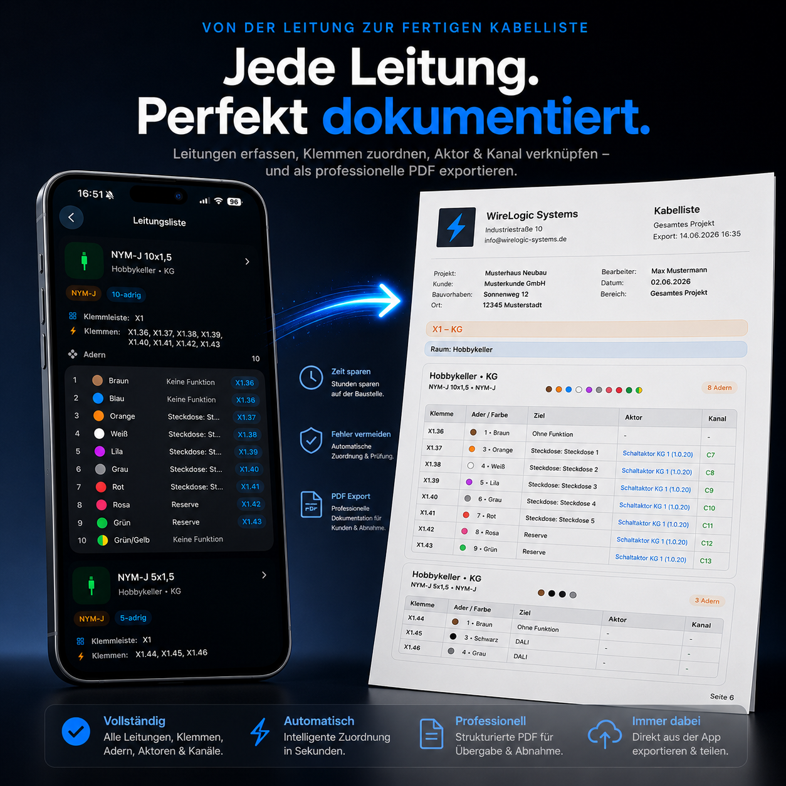

Elektroplanung. Direkt auf der Baustelle.
WireLogic ist eine App für Elektriker, KNX-Programmierer und Elektrobetriebe. Räume, Leitungen, Adern, Sicherungen, Klemmen und KNX-Daten werden strukturiert erfasst und für die Dokumentation vorbereitet.
Aus Baustellendaten wird saubere Dokumentation.
WireLogic ersetzt lose Notizen, unübersichtliche Excel-Listen und doppelte Arbeit. Die App führt durch die Erfassung eines Projekts und erzeugt daraus strukturierte Listen für Leitungen, Klemmen, KNX-Gruppenadressen und Exporte.
Eine App. Viele Arbeitsschritte.
WireLogic verbindet Baustellenerfassung, Elektro-Dokumentation und KNX-Vorbereitung in einem durchgängigen Arbeitsablauf.
Projekte verwalten
Kunden, Bauvorhaben, Orte, Bearbeiter und Projektdaten zentral in einem Projekt speichern.
Räume strukturieren
Räume nach Etagen anlegen und daraus eine klare Gebäudestruktur für die weitere Planung erzeugen.
Leitungen erfassen
Kabeltypen, Adern, Funktionen, Sicherungen, Verbraucher und Notizen direkt vor Ort dokumentieren.
Klemmen automatisch erzeugen
WireLogic erstellt Klemmstellen nach Etage, Raum, Leitung und Aderfunktion automatisch.
KNX vorbereiten
Schalten, Dimmen, Jalousie, Heizung und weitere Funktionen strukturiert als KNX-Vorschau prüfen.
Exportieren
PDF-Dokumentation, Projektdateien, WebViewer und ETS-Vorbereitung für die Weiterverarbeitung nutzen.
Gruppenadressen direkt aus der Baustellenerfassung.
Aus den erfassten Räumen, Leitungen und Aderfunktionen erzeugt WireLogic automatisch eine strukturierte KNX-Vorschau. So können Gruppenadressen früh geprüft, sauber vorbereitet und später für die Weiterverarbeitung genutzt werden.


Fertige Projektunterlagen für Kunde, Büro und Baustelle.
WireLogic erstellt aus den erfassten Projektdaten eine übersichtliche Dokumentation. Kabellisten, Klemmenlisten, KNX-Daten und weitere Projektinformationen können sauber exportiert, weitergegeben oder archiviert werden.
So funktioniert WireLogic.
Projekt anlegen
Der Nutzer legt ein Bauvorhaben mit Kundendaten, Ort, Bearbeiter und Projektnotizen an.
Räume erfassen
Alle Räume werden einer Etage zugeordnet. Daraus entsteht die Grundstruktur des Gebäudes.
Leitungen dokumentieren
Pro Raum werden Kabeltyp, Kabelart, Adern, Funktionen, Sicherung und Verbraucher erfasst.
Automatik nutzen
Aus den Eingaben entstehen Klemmenlisten, KNX-Vorschauen und vorbereitete Exportdaten.
Exportieren und weitergeben
Die Projektdaten können als PDF, Projektdatei oder über den WebViewer weitergegeben werden.
Entwickelt aus der Praxis.
WireLogic entsteht nicht am Schreibtisch eines Softwarekonzerns, sondern direkt aus dem Alltag eines Elektrikers. Jede Funktion orientiert sich an echten Abläufen auf Baustellen.
Aktuell verfügbar
Projektverwaltung, Raumstruktur, Leitungserfassung, Aderfunktionen, Klemmenliste, KNX-Vorschau, PDF-Export, Projektdatei und WebViewer.
In Entwicklung
Erweiterte Verteilerplanung, Aktorverwaltung, DALI-Ausbau, Firmenkonten, Teamfunktionen, Klemmenfeldplanung und automatische Stromlaufplan-Erzeugung.
WireLogic soll zur intelligenten Plattform für Elektroplanung werden.
Neben der iPhone-App sind weitere Funktionen geplant, die den Arbeitsalltag von Elektrikern langfristig noch stärker vereinfachen sollen – von der Web-Version für Büro und Baustelle bis hin zu einem KI-Assistenten mit Sprachsteuerung.